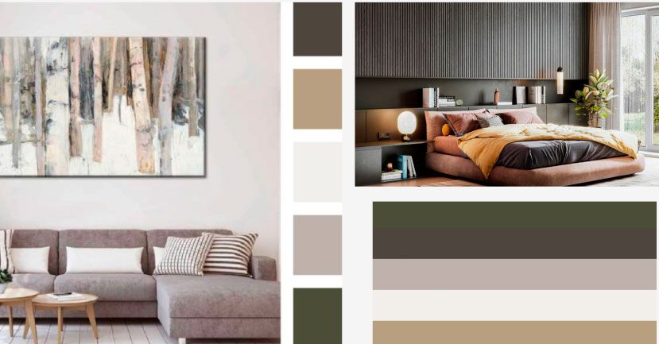

Design process
Anders Lau Didrichsen
Min design dokumentation/process, step for step

Jeg startede ud med at fokusere på at lave en "skitse" af hvordan man skal navigere rundt på min portfolio, for at give mig selv et bedre overblik over hvordan jeg skulle starte ud, og hvor mange sider jeg skulle lave.

Min farve inspiration til hjemmesiden/portfolioen fik jeg fra nordisk interiør design, jeg kan selv godt lide udseendet og vil gerne arbejde mere med det fremadrettet derfor valgte jeg det.
Figma version
slut resultat på hjemmesiden